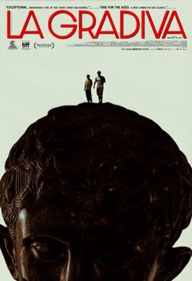

La Gradiva
From the festival
Play Trailer French teenagers take a summer class trip to Naples, Italy, in this marvelous coming-of-age film, which garnered the Cannes Critics Week Best Picture award for first-time feature filmmaker Marine Atlan and her co-writer Anne Brouillet. The focus is on three kids—gorgeous rich-kid seducer James (Mitia Capellier-Audat), his charismatic but angry buddy Toni (Colas Quignard), and shy but observant nerdy outsider Suzanne (Suzanne Gerin) —and their teacher Mercier (Antonia Buresi). It’s hard to convey how subtle, mysterious, and completely intelligent this drama is—a dark but never dour or depressing investigation of the perils of adolescent fantasizing about sexual romance and family history, as well as the enduring effects of class antagonism and resentment. It’s a drama that conveys 2026’s complete sexual fluidity: Everyone is androgynous to a greater or lesser degree, and everyone is both promiscuous and frightened in unexpected ways. With marvelous sundrenched Italian landscapes photographed by Pierre Mazoyer and Atlan, a controlled ironic tone, and a superb ensemble. La Gradiva is one of the most assured directorial debuts in years. —Larry Gross
- Directed by
- Marine Atlan
- Country
- France / Italy
- Year
- 2026
- Running time
- 145 minutes
- Language
- French
- Premiere
- West Coast Premiere
- With
- Antonia Buresi, Colas Quignard, Mitia Capellier, Suzanne Gerin
Source: Festival website programme (MVFF49): Wayback Machine copy; Festival film page: Wayback Machine copy; Poster from Wikipedia